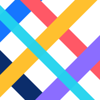
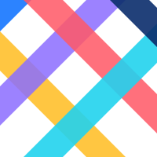
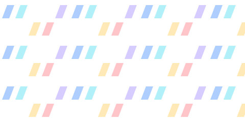

Recriação vetorial da prancha 08 — versão para validação pela unidade. Gerado por npm run padroes; não edite à mão.
Elementos baseAs faixas diagonais da marca nas seis cores principais.faixas.svgFaixas em diferentes volumesVariação de largura para ritmo e hierarquia.volumes.svgRecortes e terminaçõesTerminações retas, chanfradas e em seta.recortes.svg

Padrão diagonalFaixas cruzadas em módulo quadrado.diagonal.svgPadrão de setasSequência de setas indicando avanço.setas.svg

Padrão entrelaçadoFaixas sobrepostas em transparência, formando cruzamentos.entrelacado.svgComposição de cantoRecorte diagonal para cantos de cabeçalhos, banners e cartões.canto.svg

Textura institucionalRepetição das faixas em baixa opacidade para fundos.textura.svgGradiente marcalinear-gradient(45deg, #1676FF, #22D3EE 30%, #FFC02E 55%, #FF5866 78%, #8B6DFF)Gradiente suavelinear-gradient(45deg, #EAF2FF, #FFFFFF 60%)Gradiente escurolinear-gradient(135deg, #0B2D6B, #062457 55%, #04193F)